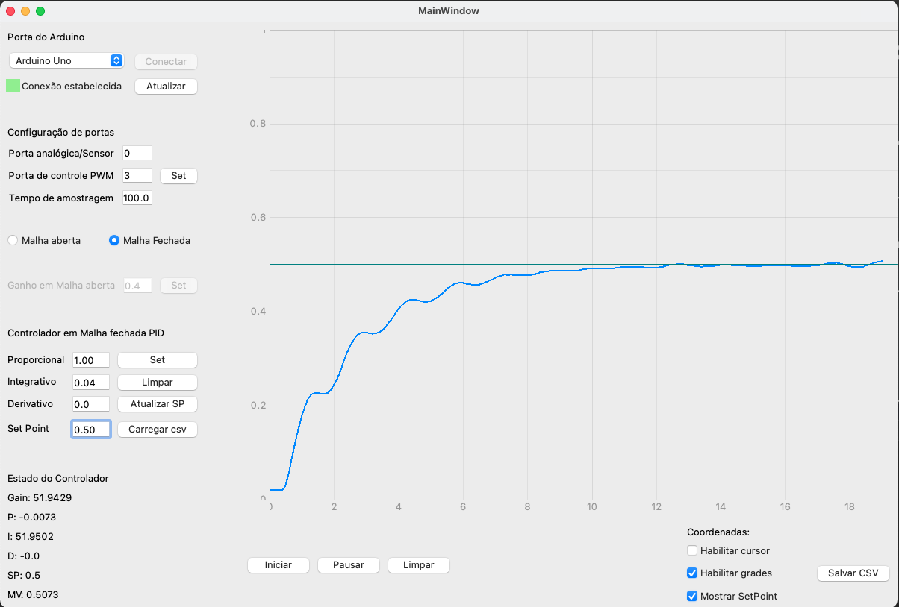

Exemplo em Malha Fechada¶
Exemplo em Malha Fechada e Controlador PID
Ao conectar o Arduino prossegue-se para configuração das portas a serem utilizadas(Por predefinição portas A0-Entrada Analógica e ~D3-Saida de PWM estão selecionadas)
Conferindo as configurações do software com a parte física prossegue-se para a configuração do controlador.
Seleciona-se Malha Fechada para configurar o controlador PID, bom possuindo os parâmetros desejados para o seguinte sistema:
O sistema a ser utilizado é o mesmo, que de outras imagens deste trabalho. Descrito pela função de transferência abaixo:
E para esse sistema oscilatório utilizou-se os seguintes parâmetros PID: P = 1.00, I = 0.04 e D = 0.00.
A sua resposta desejada a essa sintonia de PID é uma atenuação em suas oscilações quando comparado a resposta em malha aberta.
Não se esqueça do Set Point!
Utilizaremos o setpoint de SP = 0.50, ou seja 50%.
Logo apos clica-se em Set para gravar os parâmetros PID e Setpoint desejado, em seguida para iniciar o processo basta clicar em Iniciar, e o mesmo iniciar além da ação na planta física o desenho do gráfico com a resposta do sensor conforme o tempo de amostragem definido na configuração da placa.
Ao decorrer do processo, pode-se alterar o Set point para verificar a resposta do sistema em relação a um novo Setpoint para alterar basta modificar o valor na caixa de texto do set point e logo apos clicar em Atualizar SP.
Imagem contendo a configuração e a resposta do sistema:
